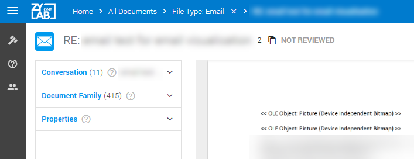
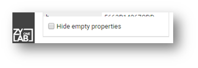

In Document View, on the left side of the screen, the Conversation panel is displayed. The displayed email message in Document View is orange in the Conversation overview.
The Conversation panel consists of an email thread. An email or conversation thread is an email message and a list of all of the subsequent replies related to the original email.
When tagging, you have the possibility to tag only the currently opened email, the current branch or the entire conversation
In Document View, on the left side of the screen, the Document Family panel is displayed. The displayed email message in Document View is orange in the Document Family overview. You might need to scroll to see it in a large Document Family.

To open a document from the family, double click on it.
In Document View, on the left side of the screen, the Properties panel is displayed. Please keep in mind that UTC times for container files (like zip, tar, rar, etc.) might not be the actual UTC time. Some container files do not have UTC available in their metadata (this can happen in some situations, like how the file was saved/modified), in which case Local time will be stored and treated as if it was UTC.
If there are duplicates, warning signs indicate different properties. Hover with your mouse above a warning sign, to view the different values.
You can choose to Hide empty properties with the checkbox at the bottom of the panel.

To filter the Properties, define what you want to see. For example, 'email' fields.

This filter will be saved and applied to other documents in Document View, until you change the Properties filter.